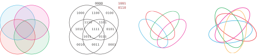
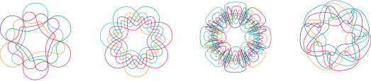
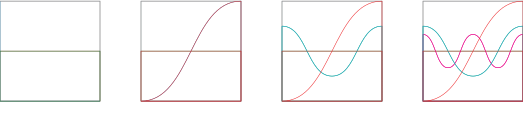
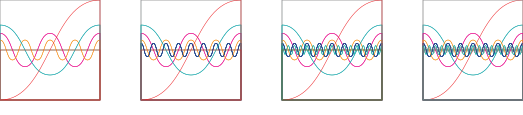
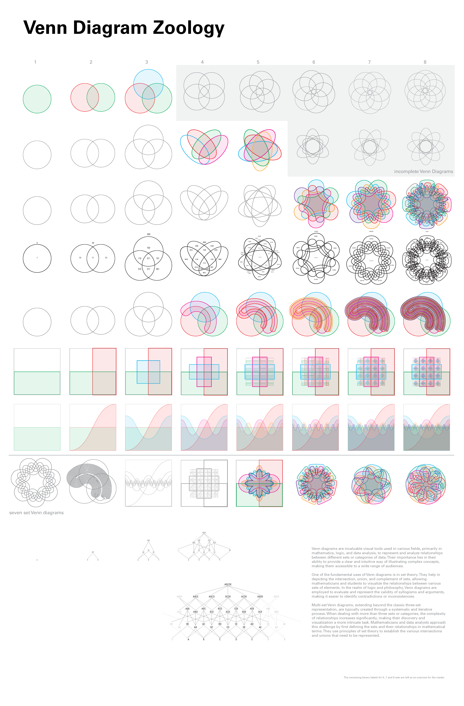

Creating high set Venn diagrams - a poster
I collaborated on a poster to display various different ways of creating Venn diagrams of up to eight sets (and beyond). I did the research for the project, contributed to the graphic design, and created an accompanying presentation to explain its relevance.
Venn diagrams are often used to represent solution spaces, so the poster was meant to display a solution space of solution spaces.

After three sets, circles can no longer be used to create complete Venn diagrams. In this example, the overlaps sets for the diagonal sets are missing.
For Venns of four and five sets, ovals can be used.

Venns of higher sets require increasingly complex shapes:

There are some more systematic ways of displaying Venns, my personal favorite being sine waves. By using the area under the waves to represent the sets, sine waves can represent any amount of sets, however the overlaps become increasingly small making them impractical.
 
An earlier draft of the poster that I created:
